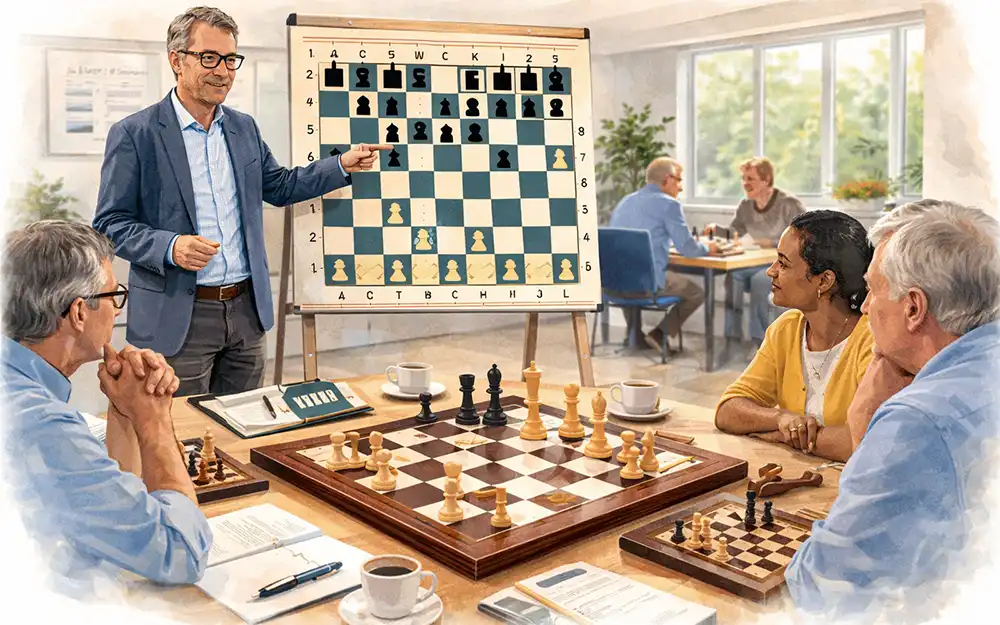

MØD BRIKKERNE
Lær brættet at kende, flyt brikkerne, og prøv de første små spil.
SKAKKURSUS FOR VOKSNE · UDEN KLUBMEDLEMSKAB
En samlet kursuspakke med instruktør, materialer og et lille hold af andre voksne begyndere. Du tilmelder dig kurset direkte og behøver ikke være medlem af en skakklub.

EN SELVSTÆNDIG PAKKE TIL PRIVATE
Du køber en plads på et kursus. En instruktør står for undervisningen, og vi samler holdet i lokale kursuslokaler. Klubmedlemskab er ikke en forudsætning.
undervisningsgange
timer på holdet i alt
deltagere som maksimum
Hver kursusaften veksler mellem forklaringer, praktiske øvelser, spil og en pause med kaffe eller te. Der er tid til spørgsmål og personlig feedback.
UNDERVISNINGEN KOMMER TIL HOLDET
Kurset kan fx foregå i et kulturhus, et undervisningslokale eller en regional skakklub med plads og undervisningskapacitet. Du tilmelder dig den samlede kursuspakke, uanset hvor lokalet ligger.
HVAD PASSER TIL DIG?
Begynderpakken starter med brikkerne og reglerne. Du får hjælp fra instruktøren og lærer sammen med andre voksne begyndere.
Se den samlede kursuspakkeFRA NYSGERRIG TIL TRYG VED BRÆTTET
Samme hold, en tydelig plan og øvelser, der bygger oven på hinanden. Hver aften varer 2½ time inklusive pause.
Lær brættet at kende, flyt brikkerne, og prøv de første små spil.
Forstå skak, skakmat og pat. Øv dig i at få kongen i sikkerhed.
Få brikkerne i spil, kæmp om midten, og lær rokade.
Opdag enkle trusler, gafler og ubeskyttede brikker.
Se på stillingen, og vælg, hvilke brikker du vil forbedre.
Spil hele partier i dit eget tempo med hjælp fra instruktøren.
Gennemgå stillinger sammen, stil spørgsmål, og opdag nye muligheder.
Spil med holdet, se dine fremskridt, og tal om, hvordan I fortsætter.
EN ENKEL VEJ TIL DIT FØRSTE HOLD
Vælg begynderpakken, oplys dit område, og fortæl lidt om dit niveau og de aftener, der passer dig.
Kursusarrangøren afklarer hold, instruktør, lokale og startdato, før din plads bliver endeligt bekræftet.
Du møder op til første kursusaften. Instruktør, bræt og brikker er klar, og I lærer hinanden at kende.

FÆLLESSKABET KAN FORTSÆTTE
Inden kurset slutter, taler vi om, hvad du har lyst til bagefter. Holdet kan fortsætte på et nyt forløb, mødes til hyggespil eller besøge en skakcafé sammen.
GODT AT VIDE
Nej. Begynderpakken er et selvstændigt kursus til private. Du tilmelder dig kurset direkte, og der kommer ikke et krav om klubmedlemskab eller klubkontingent oveni.
I lokale kursuslokaler, som arrangøren aftaler. Det kan være et kulturhus, et undervisningssted eller en større regional skakklub. Fortæl om dit område ved tilmelding; sted og startdato bekræftes inden kursusstart.
Pakken omfatter 8 undervisningsgange à 2½ time, materialer, lån af bræt og brikker, kaffe/te og en Horse Man T-shirt. T-shirtens størrelse og farve afklares ved den endelige tilmelding.
Nej. Kurset starter fra bunden. Hvis du allerede kender lidt til skak eller spiller online, fortæller du det ved tilmelding, så instruktøren kender dit udgangspunkt.
Ja. Et fortsætterforløb, hyggespil med de andre kursister eller en skakcafé kan være næste skridt. En skakklub er en mulighed, du selv kan vælge.
Du kan afprøve tilmeldingen og downloade en kladde. Siden er et koncept: Der sendes ingen oplysninger, reserveres ingen plads og opkræves ingen betaling. Faktiske hold og datoer er endnu ikke offentliggjort.